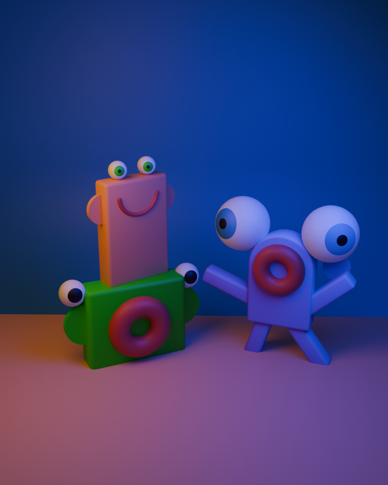
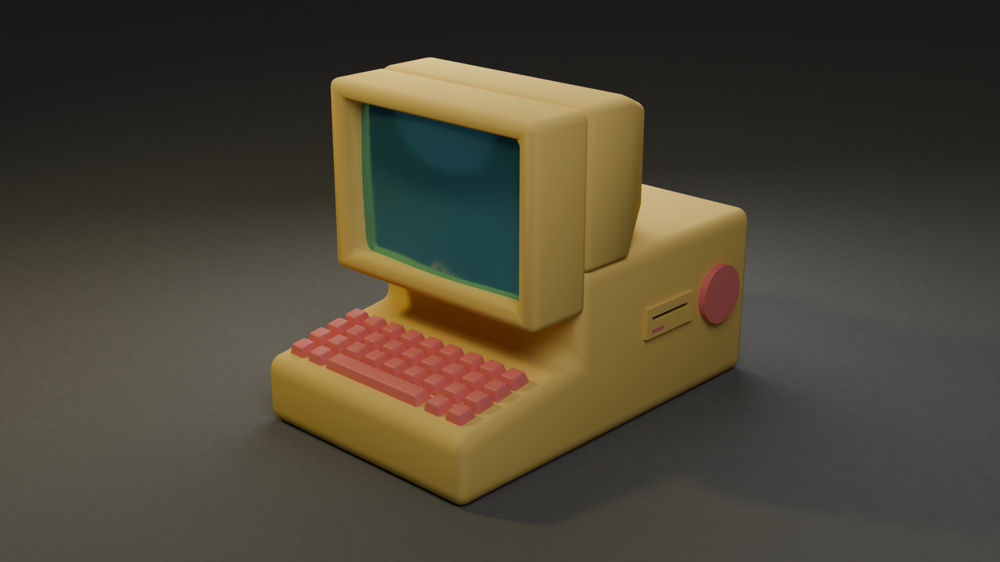
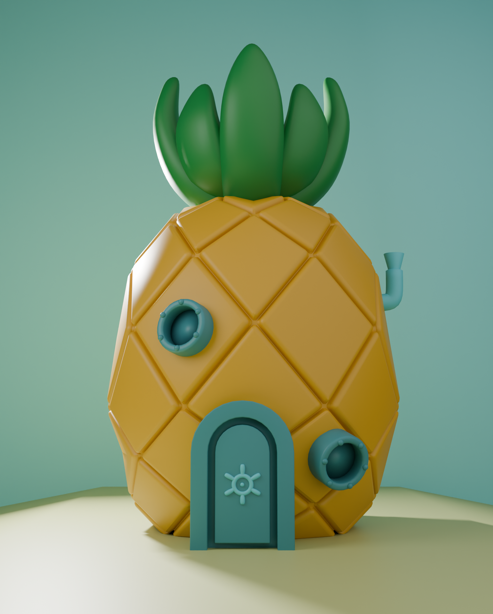
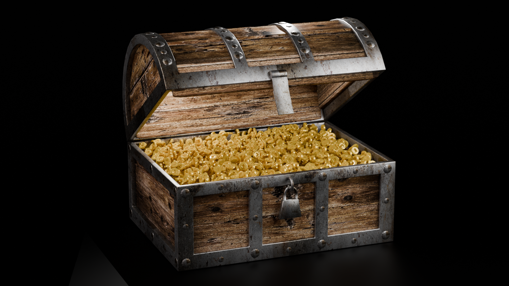
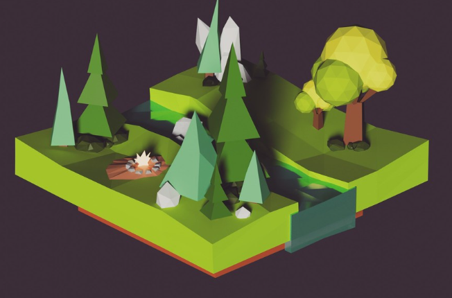

✦ Mijn werk
Mijn projecten
Blendervluggertje
Op een nacht speelde ik clair obscur en ik vond de graphics zo mooi dat ik iets moois wou maken in blender!
Basic Shapes
Dit was de eerste opdracht voor blender die ik had gemaakt voor MCT.

Examen1
Dit was het eerste examenproject voor blender die ik had gemaakt voor MCT.

Spongebob
Dit was een project voor makerslab waar we het huis van spongebob hadden nagemaakt.

Schatkist
Dit was de 2e taak dat ik had gemaakt voor blender MCT.

Low poly world
Dit is het eerste werkje dat ik ooit op sociale media had geplaatst!
